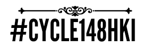
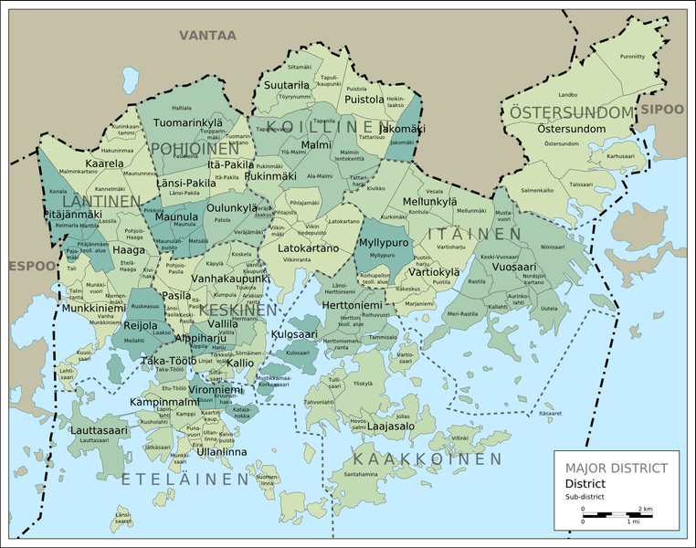

Collect a cycle-ride in all of Helsinki's sub-districts!
“Rules” in brief
- The idea is to ride in as many as possible of Helsinki's 148 sub-districts (in principle during a short period of time, for example, one year, but there's no specific time limit).
- When you start a collection, start it from zero, regardless of any previous bike rides.
- Each #cycle148HKI-cyclist keeps their own record of gathered sub-districts.
- Cycling along the border of two sub-districts or a little scratch of a sub-district is not enough, it must have been clearly cycled in. A smallish visit is enough, however it's not needed to go through or into the middle of the sub-district. It should also be noted for the Santahamina sub-district it's sufficient to go up to the garrison gate.
- Each #cycle148HKI-gatherer, of course, is responsible for themselves, to follow the rules of the road while respecting the environment and not to drop litter.
- It's desirable, but not mandatory, to share photos of at least some of the trips to social media, such as Flickr, Twitter and Instagram using the hashtag #cycle148HKI.
Maps

Edit of a map CC BY-SA 3.0 Oona Räisänen
- A zoomable map showing each sub-district.
- The same zoomable map with a lighter background.
- And the same zoomable map with just the sub-districts.
- A map as an image in different sizes. "Osa-alue" is sub-district.
- A PDF map with a list of areas.
The 148 sub-districts
Both Finnish and Swedish names.
Other considerations
Helsinki is officially divided in many different ways: 54 neighbourhoods (kaupunginosa in Finnish), eight major districts (suurpiiri), 34 districts (peruspiiri), 148 sub-districts (osa-alue) and 369 sectors (pienalue). These 148 sub-districts (such as Punavuori, Lehtisaari, Hakuninmaa, Viikinmäki and Uutela) are just right for such a cycling challenge.
Of Helsinki's 148 sub-districts, 142 are reachable without water-crossings. The remaining six require some kind of boat ride before their achievement, so a collection of 142 is a great result. Of the six water crossings, at least some can be achieved using public transport ferries (such as Suomenlinna). It would be great to hear if someone collects 147/148. To collect all 148 is an epic task because of the southernmost areas of the challenge.
Links
{kind=link}
{kind=link}